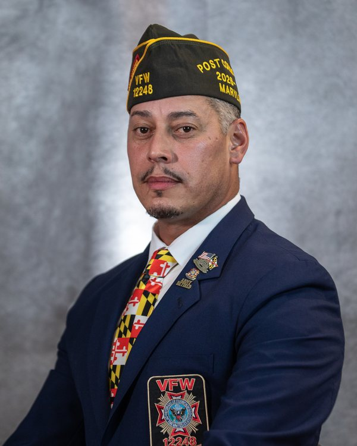
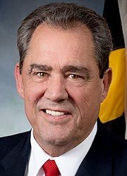
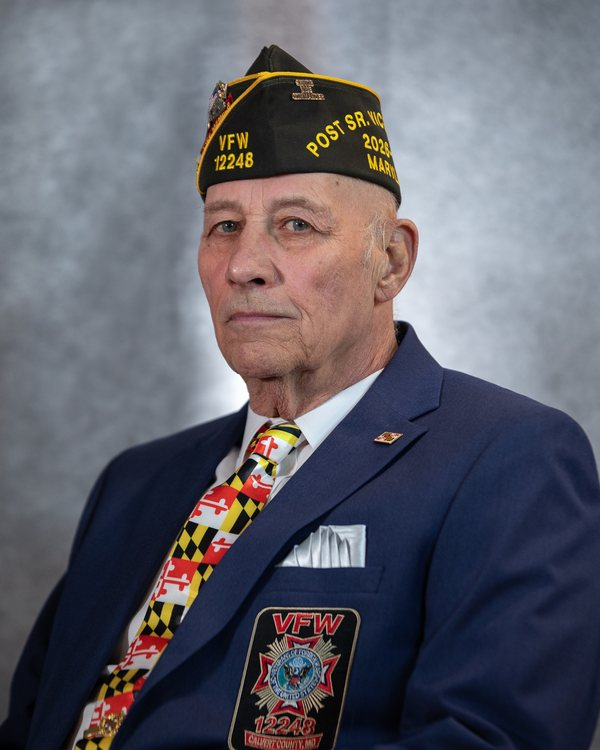
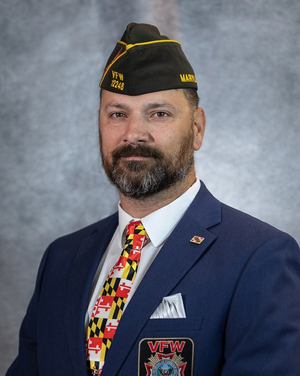
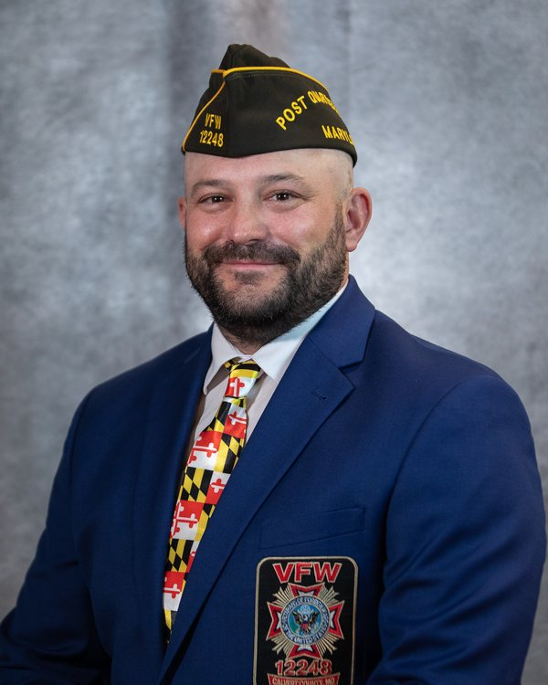
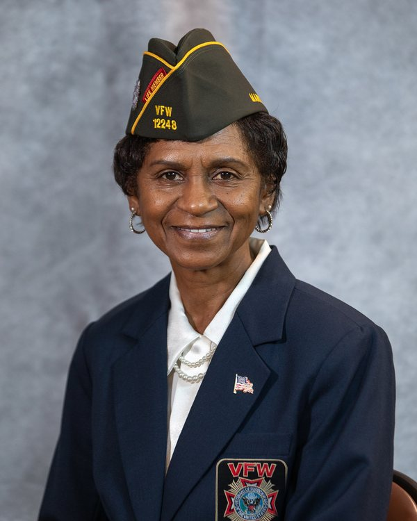

Felix Figueroa
Commander
George W. Owings III Post 12248 · Chesapeake Beach, Maryland
We unite veterans who served in combat overseas. Standing together in camaraderie, we strengthen our communities through respect and support, ensuring veterans and their families receive their earned benefits.
That's the mission of the VFW nationwide, and it's ours here in Chesapeake Beach.

VFW Post 12248 was officially chartered on March 28, 2026, in a ceremony at American Legion Stallings-Williams Post 206 in Chesapeake Beach, Maryland.
The Post was dedicated to the memory of one of Chesapeake Beach's favorite sons, Secretary George W. Owings III.
Secretary Owings was a dedicated public servant, tireless advocate for our veterans, father, grandfather, and valued friend. His distinguished career in the Maryland House of Delegates and as Secretary of the Maryland Department of Veterans Affairs left an incredible mark on our state. As a Sergeant in the Marine Corps who served our country in Vietnam, George's commitment to those who have worn our nation's uniform was unwavering. His leadership and dedication to our veterans and our state set a high standard for all who follow in his footsteps.

Commander

Senior Vice Commander

Junior Vice Commander

Quartermaster
Adjutant
Chaplain

Surgeon
Benefits Advisor
The Post meets the 3rd Thursday of every month, 7:00–8:00 PM at American Legion Stallings-Williams Post 206, 3330 Chesapeake Beach Rd, Chesapeake Beach, MD 20732. Members and eligible veterans are always welcome. See upcoming dates.